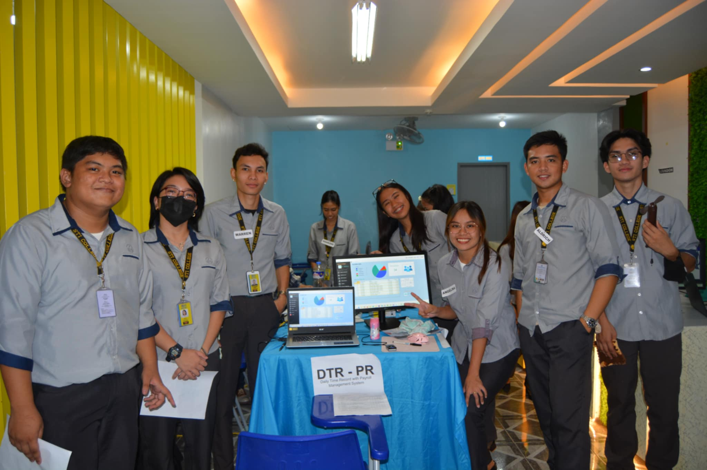
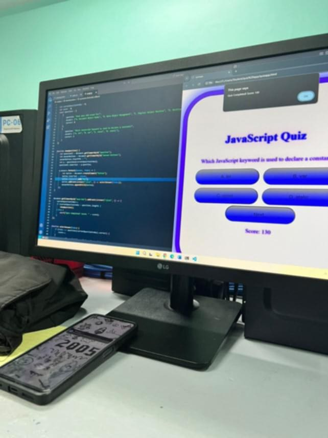
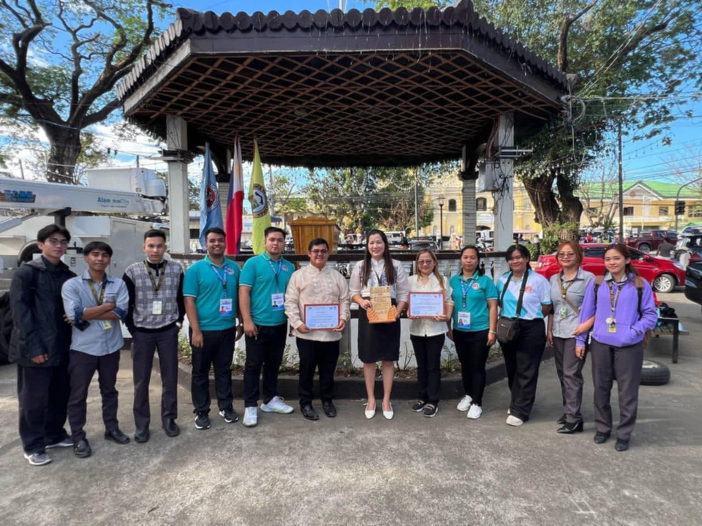

My Blog
Thesis Journey

Our thesis journey was a fulfilling experience as we developed and presented our project, the Daily Time Record with Payroll Management System. It aimed to streamline employee attendance tracking and automate payroll processes. Presenting it to the panel was both nerve-wracking and exciting, but their feedback helped us see the strengths and areas for improvement in our system. In the end, we successfully defended our thesis and felt proud of the work we accomplished.
Presentation our DTR-PR SYSTEM
Presenting our thesis, Daily Time Record with Payroll Management System, was a proud moment for our team. We demonstrated how our system can simplify employee attendance tracking and automate payroll processes, reducing manual errors and saving time. It was fulfilling to explain the purpose and benefits of our project to the audience, and seeing their interest and feedback motivated us even more.
JavaScript Quiz
We developed an interactive quiz by encoding the questions and answers using Visual Studio, which allowed us to write and organize our JavaScript code efficiently. Through this setup, we created a program that displays each quiz question, evaluates the user’s answers, and keeps track of their score. Using Visual Studio made the coding process smoother, helping us build a functional and engaging quiz to test and improve users’ understanding of JavaScript concepts.
OJT Experience
Completing 320 hours at the City Environment and Natural Resources Office (City ENRO) was an eye-opening and rewarding experience that allowed me to apply what I learned in school to real-world environmental projects. Throughout my time there, I contributed to community cleanups, assisted in environmental programs, and helped with data management and event coordination. This hands-on experience not only deepened my understanding of environmental conservation but also strengthened my teamwork and organizational skills, making my OJT a valuable stepping stone in my career journey
Sports Fest 2025

Sports Fest 2025 at STI Alaminos was an unforgettable experience! I joined both basketball and volleyball, and the thrill of competing with my teammates was beyond amazing. After intense games, we emerged as champions in both sports! The hard work, dedication, and teamwork paid off, making the victory even sweeter. It was a proud moment not just for the trophies, but for the memories made and the spirit of camaraderie that came with it.